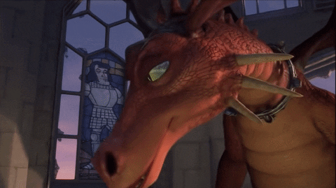
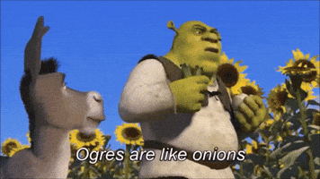
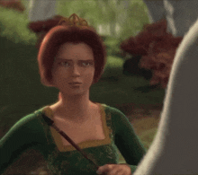

Todo projeto começa com um desafio
Lord Farquaad precisa que Fiona seja resgatada para se tornar rei de Duloc. No mundo corporativo, essa missão representa o início de um projeto: existe um problema real, um prazo, recursos limitados e uma entrega esperada.
Resgatar a Princesa Fiona da torre guardada pelo Dragão.
Entregar um produto funcionando no prazo e com qualidade.
Conhecendo o Time
Nenhum projeto é feito sozinho. Cada personagem possui características marcantes, desafios de comunicação e um papel essencial no resultado final.
Shrek
Líder Técnico"Eu só queria ficar tranquilo no meu pântano..."
Burro
Cliente / Stakeholder"Já chegamos? E agora? E se fizermos um waffle?"
Fiona
Escopo do Projeto"O requisito não era bem esse..."

Dragão
Deadline / Risco"O tempo está acabando!"
O Erro Inicial: Centralização
No início da jornada, Shrek quer fazer tudo sozinho. "Cai fora do meu pântano!" representa a mentalidade do especialista que recusa ajuda.

Frases Clássicas da Centralização:
- "Deixa que eu faço, é mais rápido."
- "Explicar para o time demora mais do que fazer."
- "Depois eu aviso quando estiver pronto."
Impacto no Longo Prazo:
Interrupções vs. Rituais Ágeis
Enquanto a equipe tenta focar no trabalho, o cliente (Burro) faz perguntas sem parar. Interrupções desorganizadas matam a produtividade.
Dividindo a Missão em Sprints
Ao invés de tentar "Salvar a Princesa" em uma única entrega gigante e arriscada, dividimos a jornada em Sprints incrementais.
Sair do Pântano
Planejamento e alinhamento do time
ENTREGUEAtravessar a Floresta
Superação dos primeiros obstáculos
ENTREGUEInvadir o Castelo
Enfrentamento do ambiente complexo
EM EXECUÇÃOEscapar da Dragão
Gestão de riscos críticos e prazos
PLANEJADOEntregar Fiona
Entrega final e aceite do cliente
META FINALVisualizando o Fluxo com Kanban
Transparência é essencial. Quando todos enxergam as tarefas no quadro, os gargalos ficam visíveis. Clique nos cartões para movê-los!
A Fazer
Em Progresso
Concluído
O Escopo Mudou! (Fiona Transforma-se)
Quando tudo parecia alinhado, descobre-se que Fiona vira ogra ao anoitecer. Requisitos ocultos surgem em qualquer projeto real.

Fiona (Escopo Inicial: Princesa)
"O requisito inicial parecia simples e direto..."
Enfrentando a Dragão (O Deadline)
O Dragão não é vilão — é o prazo final. Quanto mais perto da data de entrega, maior e mais assustador ele se torna se o trabalho for deixado para o fim.
Evolução do Time & Soft Skills
A maior conquista da missão não foi técnica, foi humana. O time aprendeu a colaborar e confiar uns nos outros.
Shrek
Liderança & DelegaçãoAprendeu a ouvir a equipe, confiar na capacidade do grupo e parar de centralizar todas as decisões.
Burro
Comunicação FocadaAprendeu a canalizar expectativas, respeitar o espaço de trabalho técnico e apoiar nos momentos críticos.
Fiona
TransparênciaAprendeu a compartilhar sua real situação e alinhar expectativas com quem estava executando o resgate.
Matriz de Paralelos: Filme vs Gestão
Explore os paralelos diretos entre os desafios enfrentados no filme Shrek e a realidade das metodologias ágeis.
Missão do Resgate
Salvar Fiona da torre do castelo
Entrega do Produto (MVP)
Resolver a dor central do cliente
Fiona Ogra à Noite
Segredo não revelado no início
Mudança de Escopo
Requisitos ocultos ou em evolução
Dragão no Castelo
Obstáculo perigoso de fogo
Deadline & Riscos
Prazo final e gargalos críticos
Burro Questionador
"Já chegamos?" a todo instante
Stakeholder & Dailies
Expectativas do cliente e rituais
Shrek Isolado no Pântano
"Eu faço tudo sozinho!"
Gargalo de Liderança
Centralização vs Delegação Ágil
Jornada por Etapas
Pântano -> Floresta -> Castelo
Sprints Incrementais
Ciclos de valor contínuo
Salão de Conquistas do Pântano
Nenhum projeto é entregue por apenas uma pessoa. Clique nos escudos de conquista para desbloquear as lições do time!
Comunicação Focada
Alinhamento DiárioEliminar os ruídos e alinhar expectativas entre o cliente e quem executa.
Sprints Incrementais
Meta DivididaDividir o grande desafio em etapas menores e mensuráveis.
Colaboração em Equipe
Time MultidisciplinarShrek, Burro e Fiona combinam forças diferentes para vencer o castelo.
Adaptabilidade ao Escopo
Flexibilidade ÁgilAceitar requisitos imprevisíveis sem perder o foco na entrega.
Liderança Descentralizada
Delegação & ConfiançaParar de tentar fazer tudo sozinho e confiar nas habilidades do grupo.
Muito Obrigado!
"E viveram felizes, ágeis e organizados para sempre!"
Apresentação criada para demonstrar conceitos de Scrum, Kanban, Liderança e Gestão de Pessoas com o universo de Shrek.